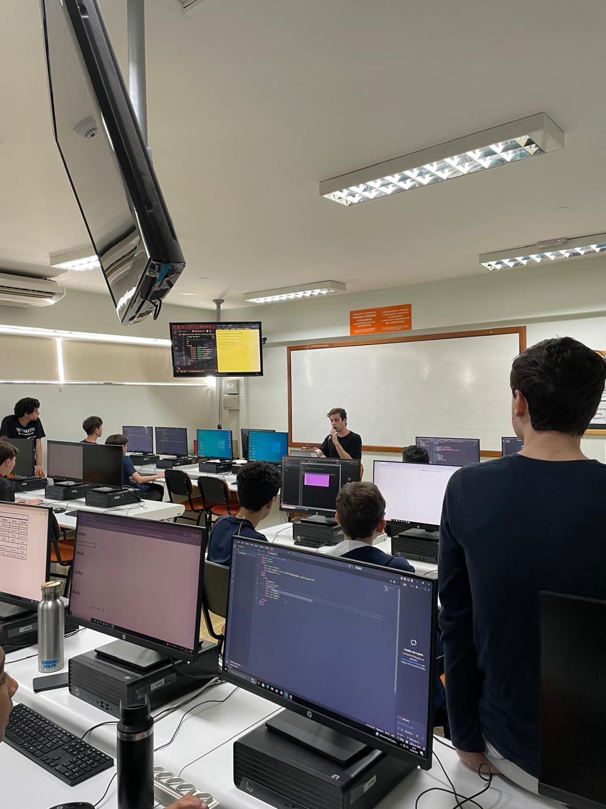

Relatório – 19ª Aula
Data: 10/08/2026
Turma: 8º e 9º ano
Instrutor:Fatobene
Relatório – Tabelas e Formulários
Na aula do dia 10 de Agosto, o Fatobene começou dando uma parte da aula para que os alunos possam finalizar suas tabelas, pois a maioria não tinha entregue a atividade, por um tepo da aula ficamos rodando e ajudando os alunos que ainda não finalizaram suas tabelas, vi tabelas muito diferentes e criativas, é visível que alguns alunos conseguem se destacar por sua criatividade. Após esse momento voltamos para o conteudo de formulários, que vimos algumas semanas antes, onde o Fatobene fez todos os elementos dos formulários junto com os alunos e explicando enquanto codava o o formulário. Ao final da aula, foi passado uma atividade para os alunos criarem seus formularios utilizando as tags básicas da form, ajudamos os alunos novamente a realizar as atividades, alguns conseguiram finalizar durante a aula. No geral foi uma aula tranquila e produtiva onde consegui ajudar os alunos no que eles precisaram.
